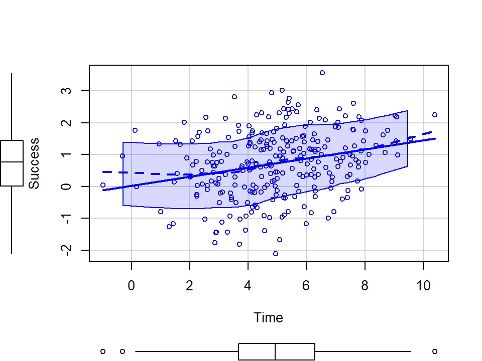
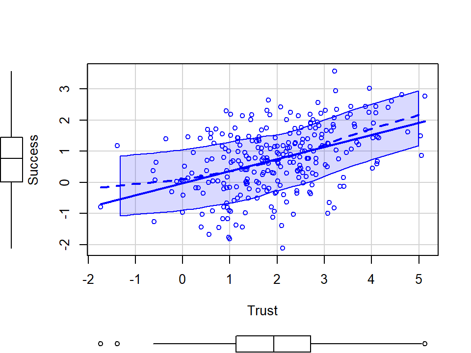
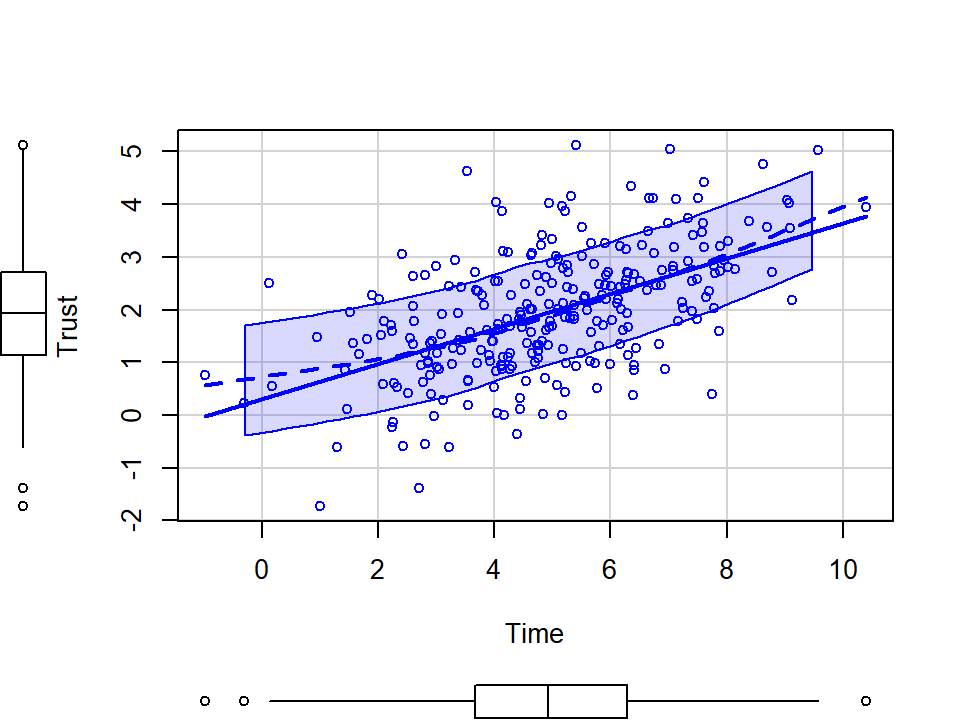

library(car)
set.seed(42)
# For simulation of mediation steps see Hallgren, 2013
# path a strength
a=.4
# path b strength
b=.4
# path c' strength
cp=.01
# people
n <- 268
# Normal distribution of time (mins)
X <- rnorm(n, 5, 2)
# Mediator
M <- a*X+rnorm(n, 0, 1)
# Our equation to create Y
Y <- cp*X + b*M + rnorm(n, sd=1)
#Built our data frame
Marshmallow.Data<-data.frame(Success=Y,Time=X,Trust=M)
# plots
scatterplot(Success~Time, data= Marshmallow.Data, smoother=FALSE)
scatterplot(Success~Trust, data= Marshmallow.Data, smoother=FALSE)
scatterplot(Trust~Time, data= Marshmallow.Data,smoother=FALSE)